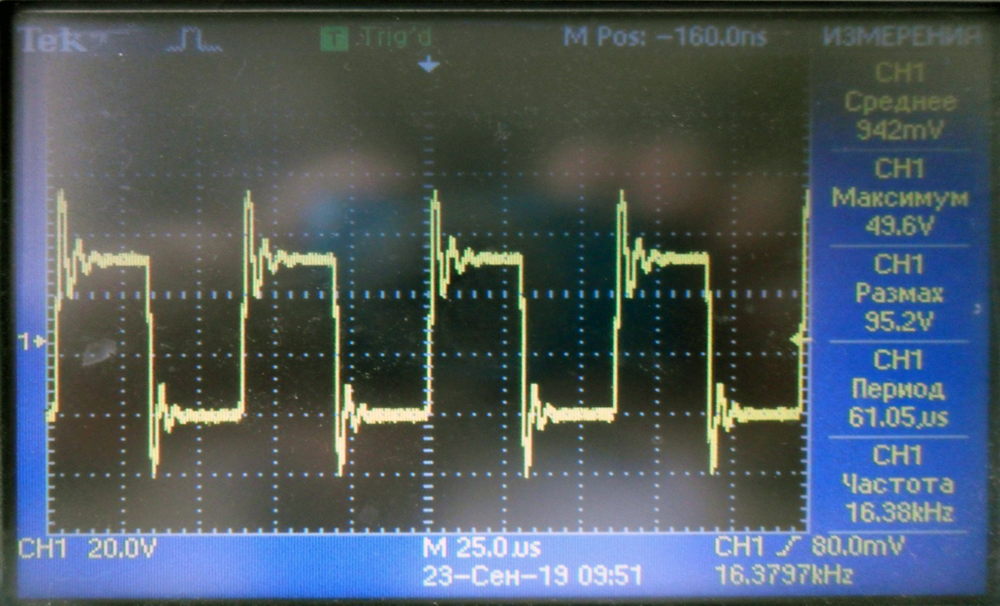
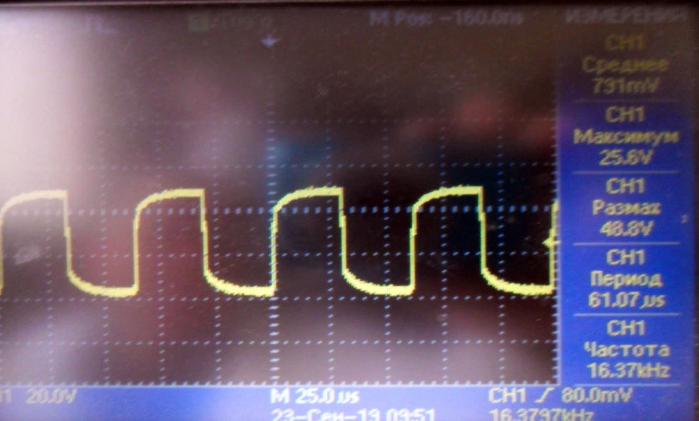
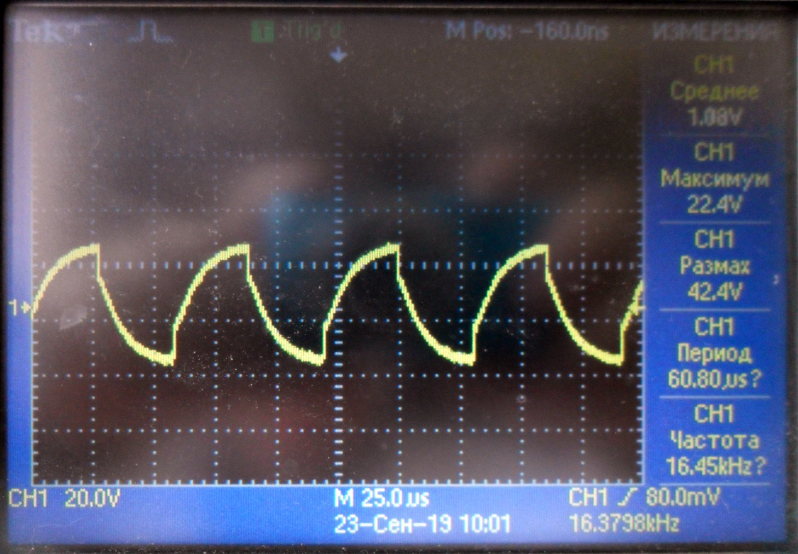

↑
Проверка умножителя 1321
- 1. Проверяем мультиметром на короткое замыкание провода, припаянные к умножителю.
- 2. Проверяем мультиметром правильность установки и исправность светодиода. Мультиметр в режиме измерения
диода (прозвонки). Светодиод должен светиться синим цветом, номинал KP-1608QBC-D.
- 3. Собрать схему для проверки. Взять пульт для умножителей, подключить к источнику питания Б5-78/6 (подаем
напряжение 6-7 В). К выводам пульта подключаем осциллограф и умножитель.
- На осциллографе должна быть такая картина

- 4. Проверить мультиметром (1000в) напряжение на конденсаторах относительно земли
- Напряжения должны быть :
| Точка |
1 |
2 |
3 |
4 |
5 |
6 |
7 |
8 |
9 |
10 |
11 |
12 |
13 |
| Напряжение |
85 |
150 |
190 |
220 |
250 |
285 |
335 |
360 |
390 |
415 |
440 |
465 |
480 |
- При измерении мультиметром напряжения на последнем конденсаторе, картинка на осциллографе изменится и будет
такая:

- Потребление от источника питания рабочего умножителя не более 20ма, если потребление больше (например 60ма)
и картинка на осциллографе такая — значит умножитель не исправен.

- Ремонт заключается в проверке элементов и монтажа.
- Обратить внимание на качество пайки, чтобы не было не припаянных элементов.
- Проверить диоды мультиметром.
- Проверить маленькие конденсаторы мультиметром (предел 20Мом), должно быть не менее 2 Мом ! Что меньше —
менять. Номинал 0603-X7R-0,1 мкФ +_10%-100В (06031C104KAT2A)